Pre
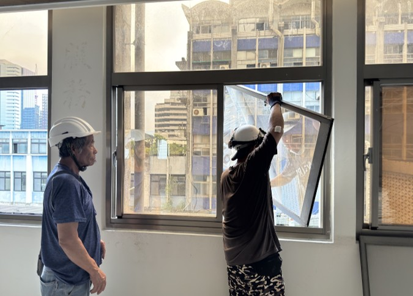
→
Post
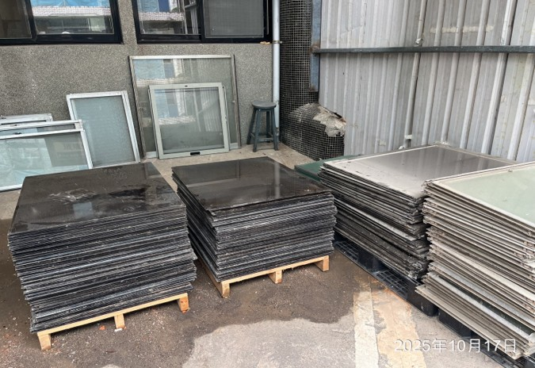
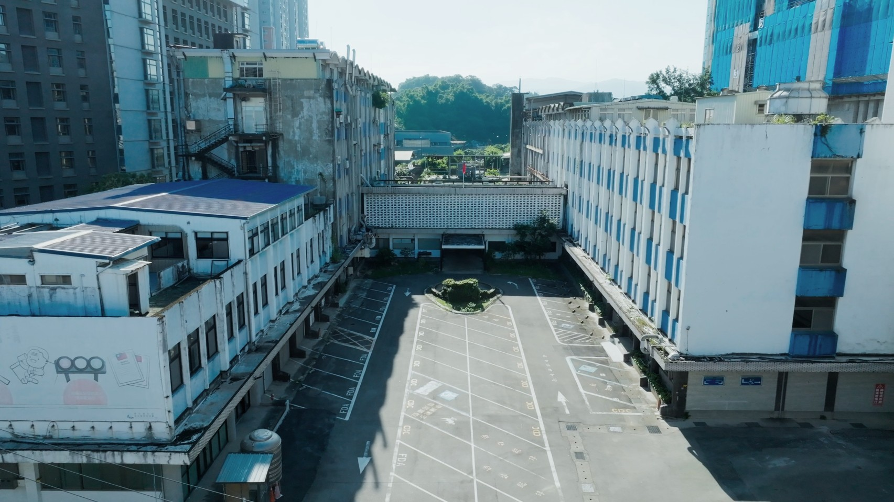
Over two decades, Taiwan has evolved through SARS and COVID-19. This center stands not just as a shield for life, but as a testament to our collective resilience.
By preserving the historic grand hall and its iconic shell roofs, we bridge the gap between historical significance and contemporary architectural aesthetics.
Moving beyond traditional demolition. We identify and categorize each component, ensuring every material returns to its rightful place in the circular economy.


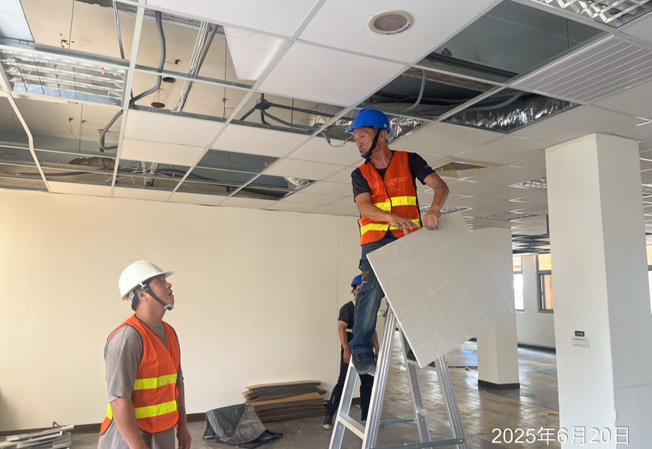
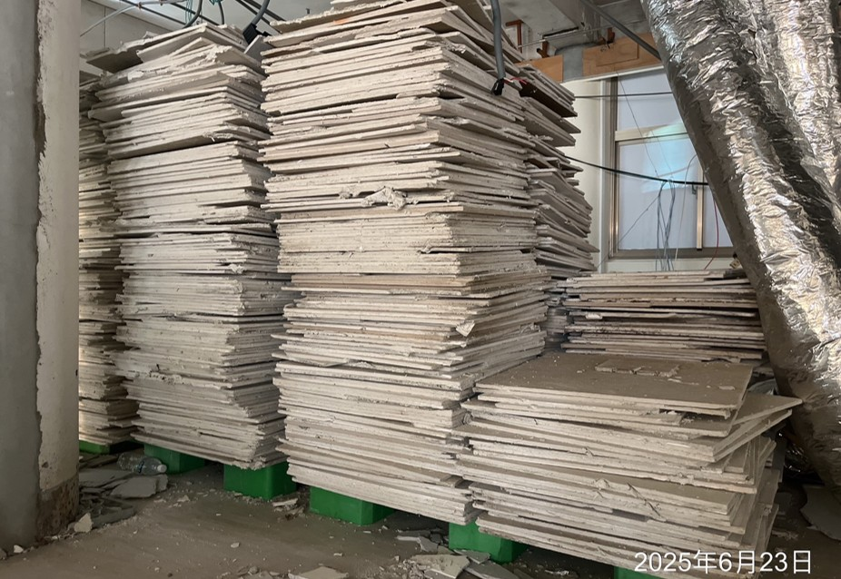
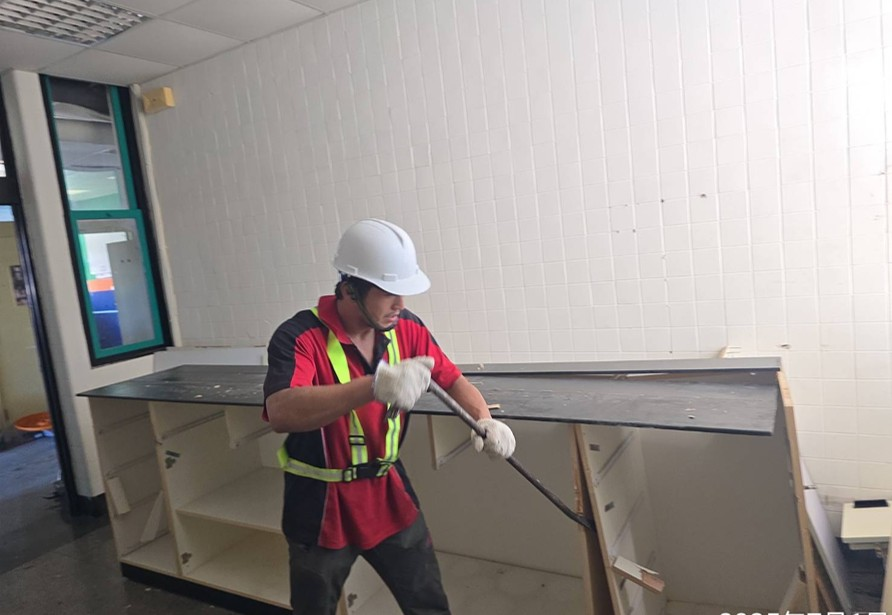
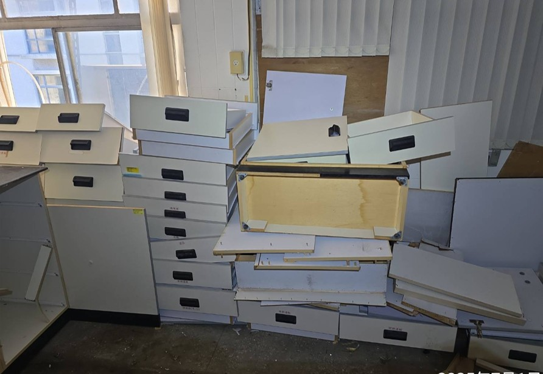
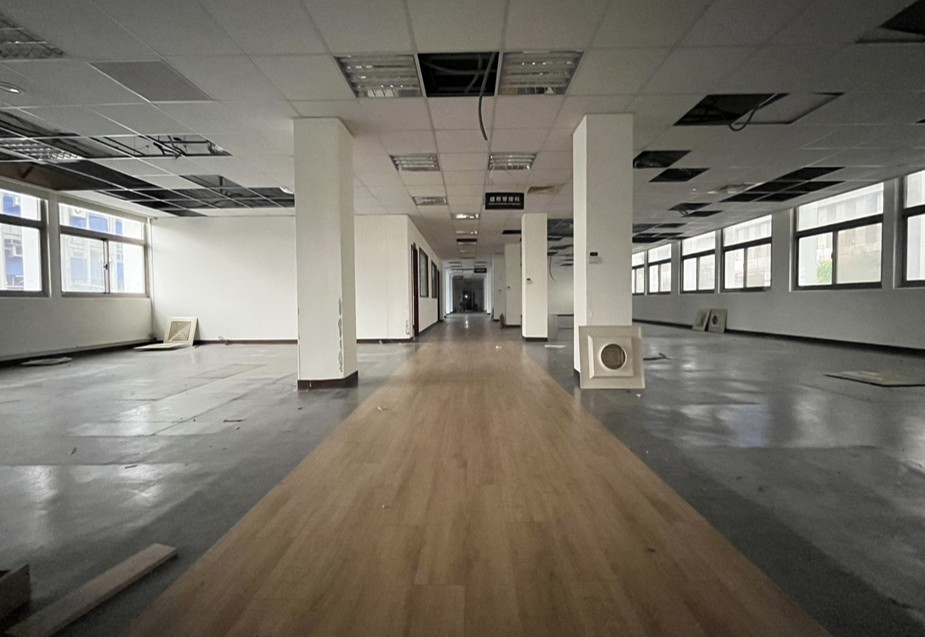
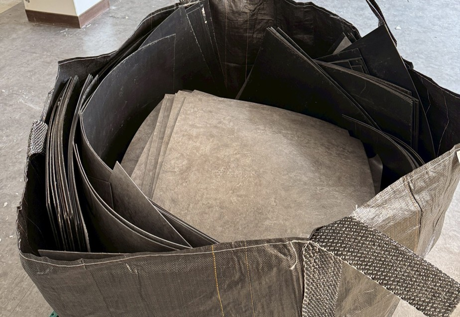
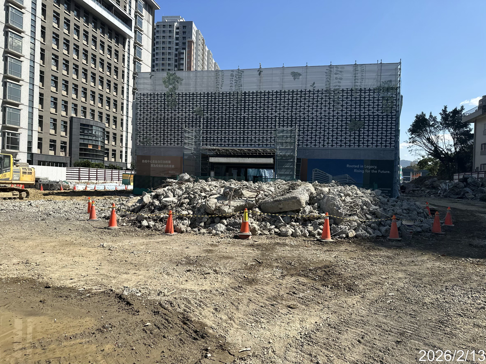
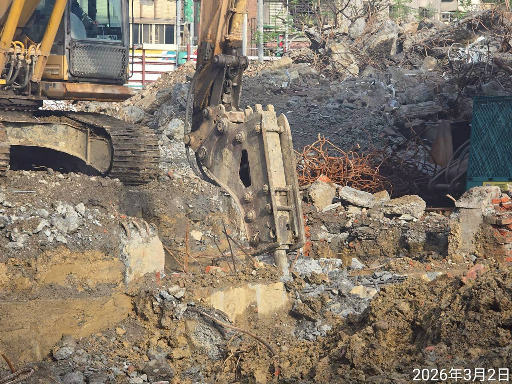
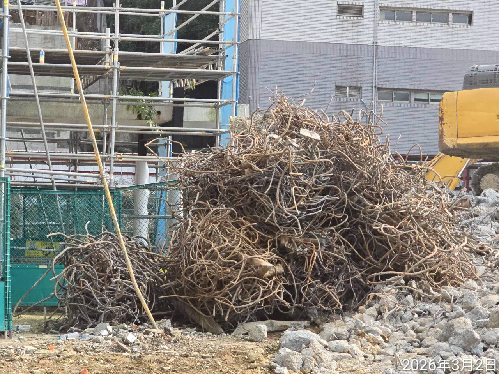
Every stage — from material weight and reprocessing methods to final destination — is meticulously verified for full transparency.
Re-entered the Circular Chain
Final Incineration Rate
Total Resource Recovery
More than an inauguration, it is the rebirth of 1,143 tons of material. We carry the mission of protection into a future of sustainable circulation.
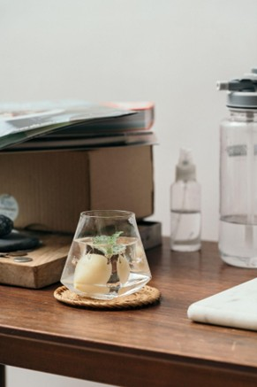
01 Refracted Memories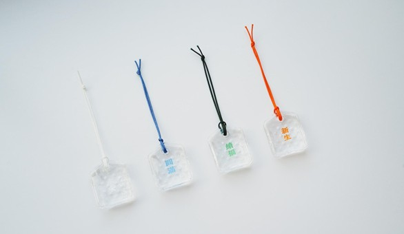
02 Crystalline Shield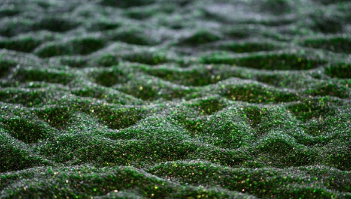
03 Symbiotic Loop